Northern Peru: Church Leadership Training
PiM's
8th Seminary in Peru
After
34 hours of driving, flying and layovers Karvin arrived at Chepen, Peru for his
first seminary of two days to train church leaders. Pastor Victor Quispe of
Bolivia taught, “Entire Sanctification”, “Pastoral Ministry” and
“Pastoral Identity”. Dr. Nehiel Rojas of Pasadena, TX. taught, “Ministry
of Prayer”, “Ministry to the Sick” and “Kingdom of God”.
Karvin taught, “Purpose of the Church” and “Missions”.
The evening of the second day the teachers flew to Lima for their second
seminary arriving after midnight where they would teach the same topics to
church leaders in that city of over 12 million people.
Many thanks to those who support this ministry that we may continue to equip and edify church leaders. To date, 1080 church leaders from nine (9) different countries have attended our leadership conferences. Following are a few pictures...
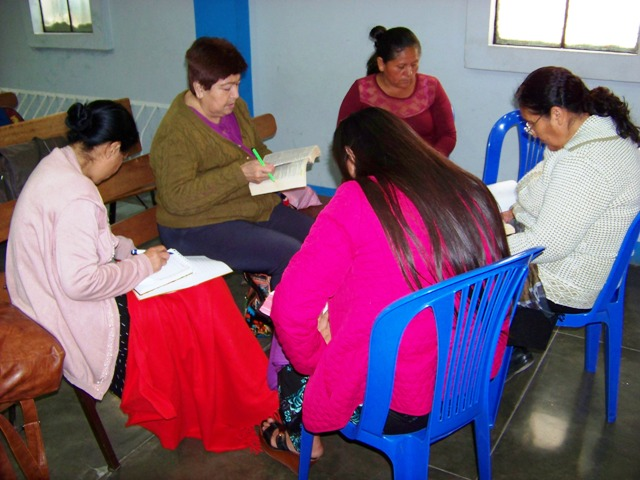
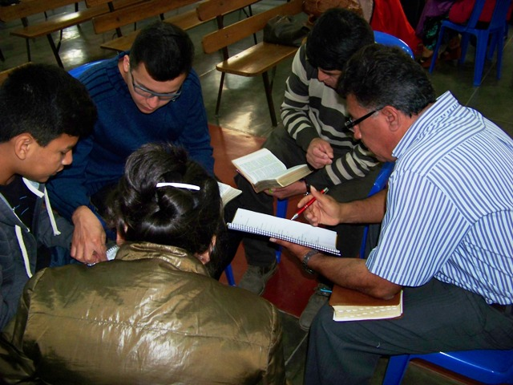
Students Looking-Up Answers in Karvin's Class
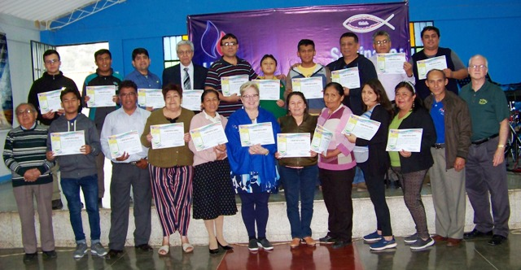
Some of the students &
teachers
=========
PiM's
7th Seminary in Peru
Chepen
& Lima Locations
Teachers: Pastor Nicolas Perez - Peru; Pastor Victor Quispe - Bolivia; Karvin Adams - USA.
We had seven conferences in each location with an evening service. Conferences topics were: "What the Bible Says about Discrimination in the Church", "History of the Church in Latin America", "The Bible and the Ideology of Gender", "Church Government", "Distinct Doctrines of the Church of God", "One God, 3 Persons", "Salvation from Sin", "Entire Sanctification", "Unity of God's People", and "The Kingdom of God". At least 53 church leaders attended the seminaries representing about 12 congregations. Both locations are making plans for next year's seminaries. Below are pictures of the classes...
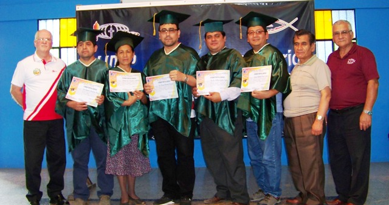
Five graduates who have attended the last 7 years in Chepen
Teachers L-R: Karvin, Victor, Nicolas
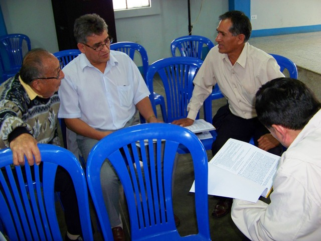
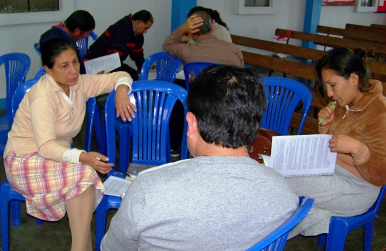
Group discussions in Karvin's conference
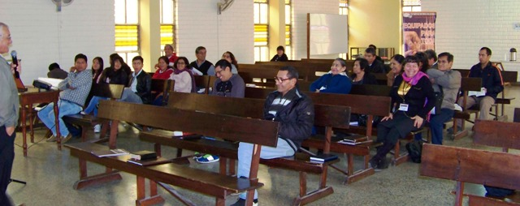
Church leaders in conference in Lima
=========
PiM's
6th Seminary in Peru
Chepen
& Lima Locations
Teachers:
Pastor Nicolas Perez - Peru, Dr. Nehiel Rojas - TX and Pastor Victor Quispe –
Bolivia.
Classes:
“Principles of Parenting”, “Pastoral Calling and Support”,
“Participation of Christians in Politics”, “With Whom Should I Marry?”,
“Preparation for Death”, “Pastoral Counseling”, “Prepared to Serve
Better”, “Hell and Heaven, According to the Bible”.
These same topics were taught at both location.
Nehiel preached on Saturday
night, August 5, in the Zarate church.
Assessment...
* Students seemed to be very
involved and receptive to the teachings, both in Chepen and in Lima. Very
pertinent subjects.
* There were some of the regular
participants in Chepen that were unable to attend. However, we had some
new participants this year.
* We were very excited about the
participation of a 13-year-old this year. He had attended a couple of
years ago but was unable to attend last year. His participation showed
great spiritual growth. We are excited about what God can do with this
young man.
*
Lima pastors are begging to have this again next year. They were already
talking about what they learned from this first seminar and how they will
improve their participation next year. The brethren seemed hungry for fellowship
and studying God's word.
*
The pastor of the Zarate church told Nehiel personally that he found the
quality of this seminar to be far greater than what they recently experienced.
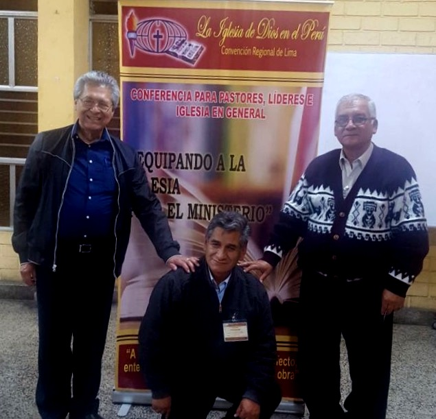
(L-R) Dr. Nehiel Rojas, Pastor Victor Quispe, Pastor Nicolas Perez
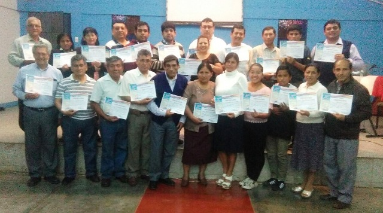
Church Leaders at Chepen Seminary
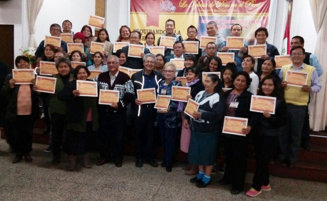
Church Leaders at Lima Seminary
====================================
PiM returned to Chepen, Peru to our 5th Annual Leadership Training for the churches in northern Peru, August 4 & 5, 2016. A total of 24 church leaders from ten congregations were present in the different eight classes offered by the three teachers: Dr. Nehiel Rojas from Houston, TX, Pastor Nicolas Perez local pastor from Chepen, Peru and missionary Karvin Adams from Calhoun, LA. Topics taught were "The History of the Church of God Reformation Movement", "The Cults", "Life of Prayer", Christian Ethics", "Stewardship of Life", "Church of God Doctrines", Pastoral Care and Counseling" and "The Church's Great Commission". Plans are being made to have two seminaries in two different locations in 2017; one in Chepen and the other perhaps in Lima, Peru.
Here are a few pictures of the event in Chepen....
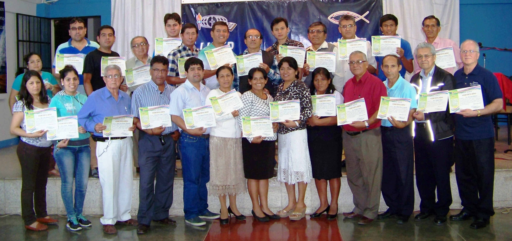
Students & Teachers
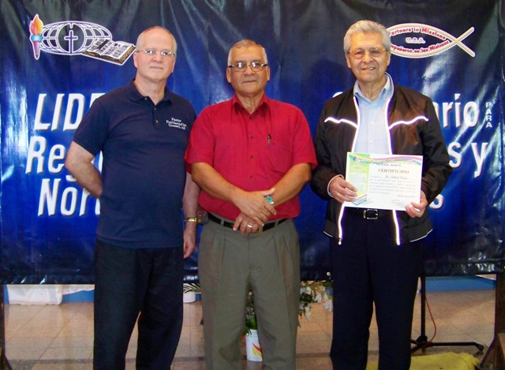
Teachers: (L-R: Karvin Adams, Nicolas Perez, Nehiel Rojas)
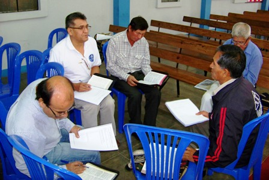
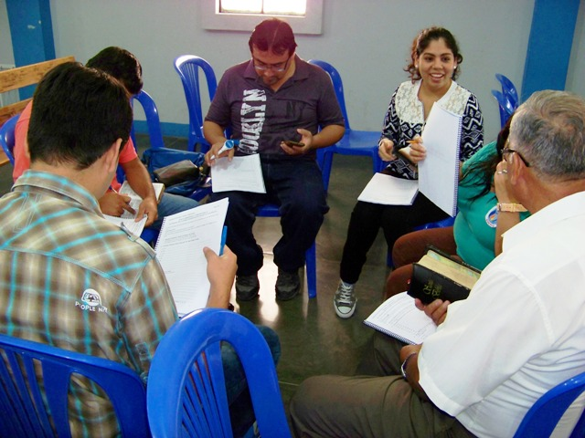
Students in Study Groups
=================
August 3 - 5, 2015 PiM in partnership with the Church of God in northern Peru, conducted its 4th Annual Leadership Training for churches. We had a total of 22 students in Chepen, many who have attended the previous years. Topics included, "Christian Women in a Secular World", "Pastoral Ministry: Healing the Wounds of the Soul", "The Authority & Unity of the Bible", "What the Bible Teaches about Divorce", "Our Faith", "The Kingdom of God: Present or Future", and "The Doctrines of Last Things". This year's teachers were: Nehiel and Joanna Rojas from Houston, TX and local host pastor Nicolas Perez. While in Peru the Rojas also preached four times in three different places in the area. We are truly grateful to have such qualified, dedicated teachers as these who are committed to take the Gospel of Jesus Christ to Latin America.
Below are a few pictures of our teachers and students.....
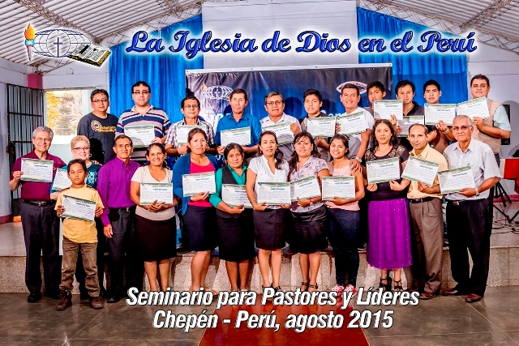
Students and Professors with Certificates
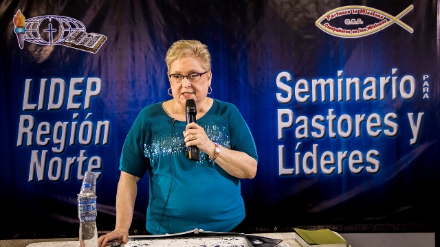
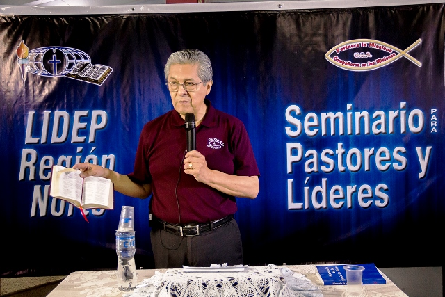
Teachers: Joanna & Nehiel Rojas
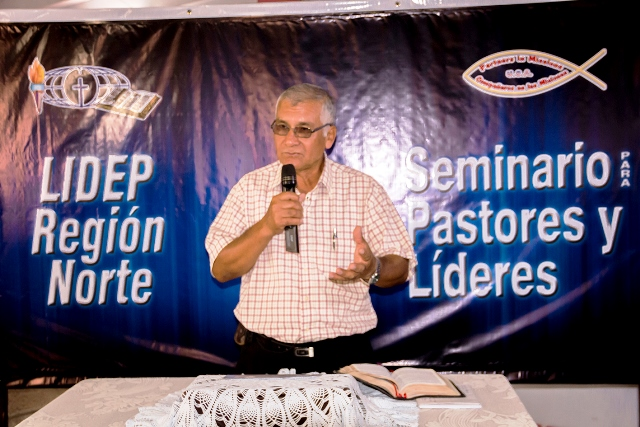
Teacher/Host Pastor: Nicolas Perez
2014 Leadership Training
PiM conducted its 3rd Annual Leadership Training in northern Peru August 2014. We had a total of 48 students (28 in Chepen and 20 in Jaen) which represented about 14 churches. This was Jaen's first seminary and Chepen's third. One Indian pastor walked 3 hours from his village to catch a ride on a truck, and then rode a bus for several hours in order to attend. We were asked to teach on the following subjects: Homosexuality, Living Together Outside of Marriage, The Spiritual Gifts, Gift of Tongues, Homiletics, Doctrine of Justification, Church Administration, Abortion, and the Trinity. Our teachers were Pastor/Missionary Nehiel Rojas, Local Pastor/Missionary Nicolas Perez and Missionary Karvin Adams. Both regions have asked us to return next year. We will consider the possibility of videotaping the seminary in Chepen each year with the capability of distributing tapes and teaching materials to those who cannot attend. Copies can be kept in the Warner School Library in Chepen.
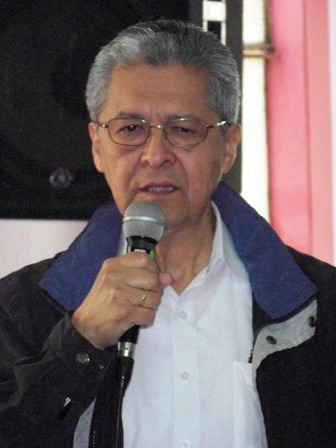
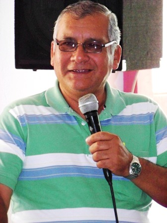
Teachers: Nehiel Rojas (L) and Nicolas Perez (R)
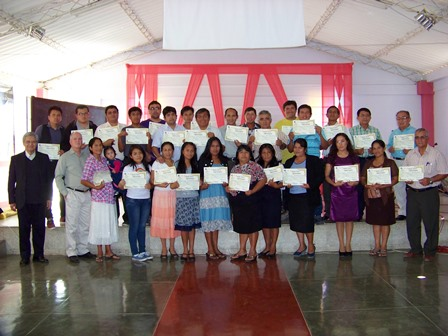
Students and Staff at Chepen
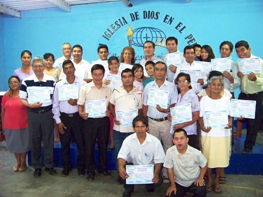
Students & Staff at Jaen
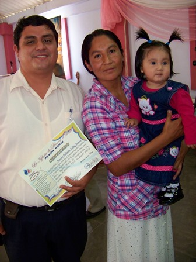
Students who came with their 8-month old child each day
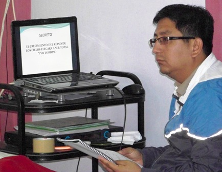
Technician: Samuel Perez
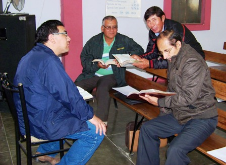
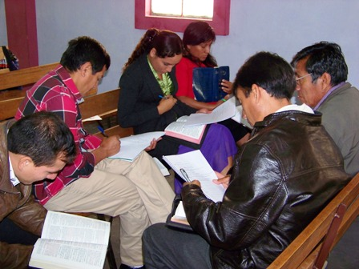
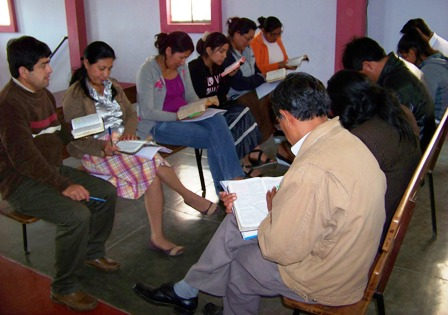
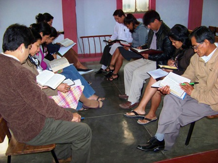
Students given group assignments in Karvin's class
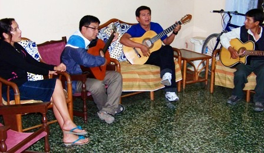
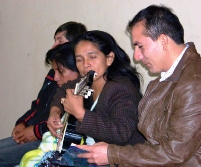
Students relaxing at night playing guitars and singing
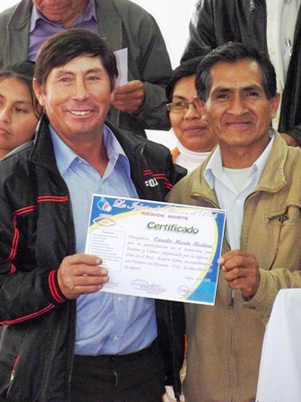
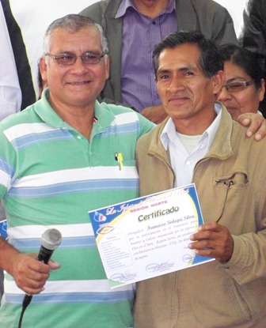
Student receiving his certificate of learning (L); Teacher receiving his certificate of appreciation (R)